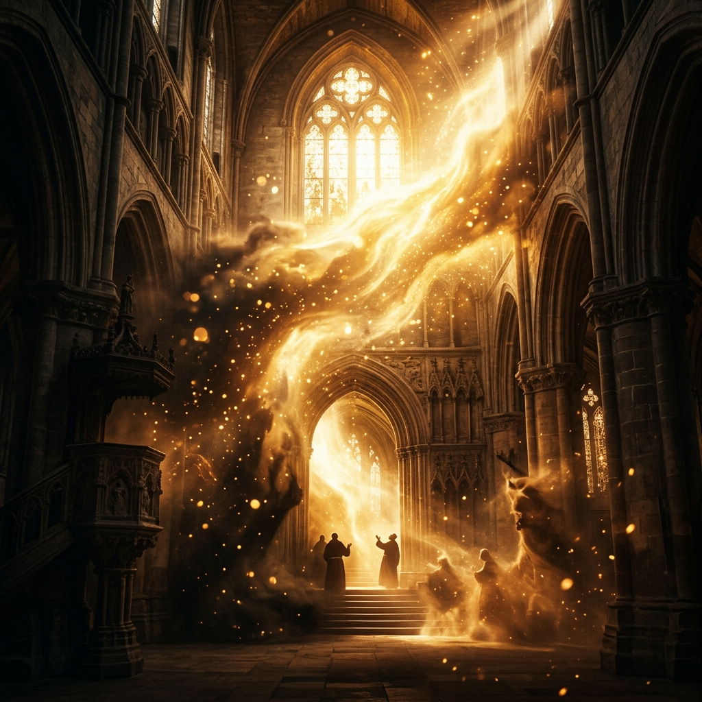
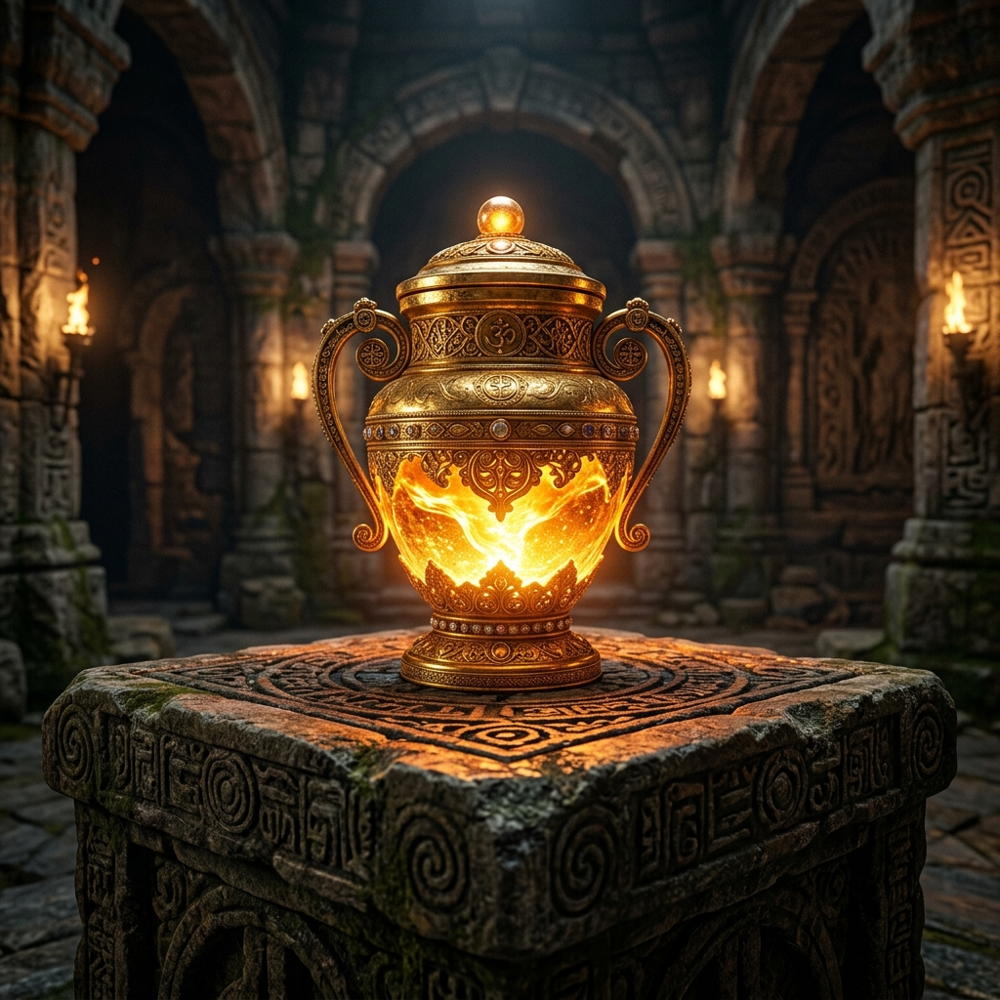

Masterclass · The Law of Knowledge
THE LAW OF
KNOWLEDGE
Authority begins where understanding begins
What you know — or more accurately, what you understand — affects the realms you have authority over, and the areas where you remain vulnerable.
🔑 The One-Line Thesis
Knowledge is not given to decorate your mind. It is given to restructure your reality. Ignorance is not neutral — it is an open door through which loss, delay, and limitation consistently enter.
📜 The Core Scripture
"My people are destroyed for lack of knowledge."
— HOSEA 4:6
TAP: WHY "DESTROYED" AND NOT JUST "LIMITED"
Destroyed. That single word carries an enormous weight most people read past too quickly. Ignorance is a doorway — an open door — through which loss, delay, confusion, and limitation consistently enter a person's life. But God is not a legal machine. He is a Father — His grace covers you even while you are still learning. The law matters not because His love is conditional, but because the life He intends is richer than ignorance permits.
🗺 The Master Framework Map
Tap any node to reveal the full depth of that concept.
THE THREE LEVELS (ASCENDING)
THE TWO REALMS YOUR UNDERSTANDING PRODUCES
FOUR CHANNELS GOD USES TO GIVE LIGHT
WHY GOD DOESN'T GIVE EVERYONE THE SAME REVELATION
THE CHAIN THAT GOVERNS EVERYTHING
🧩 Experiential Deep-Dives & Labs
LIGHT DISPLACES LIMITATION
John 1:5 — "The light shines in the darkness, and the darkness did not comprehend it." Darkness cannot overpower light. Not because light fights harder. Because darkness cannot survive the presence of light. Light does not struggle with darkness. It displaces it.
TAP: WHY SAME PRAYER — DIFFERENT RESULTS
Two people can pray the same prayer, declare the same scripture, use the same words — and produce entirely different results. It is not that one person's sincerity is greater. It is that one is praying from genuine understanding of what they are standing on.
Acts 19:15 — Sons of Sceva had the right name. "Jesus I know, and Paul I know — but who are you?" They were driven out, wounded. Acts 16:18 — Paul spoke one sentence after days. The spirit came out that very hour. Same name. Entirely different depth.
Entirely different result.

⚡ LAB 1: THE THREE LEVELS EXPLORER
Most believers are stuck at Level 1. Click through each level to understand what separates a believer with information from one who produces consistent results.
You can explain things but not produce them. The Pharisees had memorised entire books of the Law and missed the one the Law pointed to. Scripture calls this having a form of godliness but denying its power — 2 Timothy 3:5.
Psalm 119:130 — "The entrance of Your words gives light." The Word can be present in your life — in your Bible, in your prayers — and still not have entered you. When light finally comes at a spirit level, the ground of your life shifts because the ground of your understanding has changed.
Proverbs 24:3 — "Through wisdom a house is built." This is illuminated judgment — the capacity to navigate life producing consistent fruit because you operate from understanding rather than assumption. This is what makes one person's prayer move a mountain while another circles the same mountain for years.
THE VESSEL MUST MATCH THE ANOINTING
2 Timothy 2:20-21 — "In a great house there are vessels of gold and silver... if anyone cleanses himself, he will be a vessel for honour, sanctified and useful for the Master, prepared for every good work." Preparation is not incidental. It is the prerequisite.
TAP: WHEN POWER BECOMES DANGEROUS
History is full of accounts of people who carried genuine anointing but lacked the knowledge and character to sustain it. They rose quickly and fell catastrophically. Not because God withdrew His grace — but because the vessel was not structured to hold what was flowing through it. The wiring was not thick enough for the current.

🔍 LAB 2: THE KNOWLEDGE AUDIT
In every area of life, something you know or do not know is shaping the outcome. Select a domain to test whether you have Knowledge, Light, or a Gap.
THE CHAIN THAT GOVERNS EVERYTHING
Light identifies your grace. Knowledge builds your capacity. Revelation deepens understanding. Understanding combined with faith increases the consistency of supernatural backing. That backing, channelled through prayer and obedience, produces consistent, reproducible fruit.
You will not consistently dominate what you do not understand. And you will remain exposed in areas where light has not yet come — not because God has abandoned those areas, but because the cooperation that allows His fullness to manifest has not yet been developed there.
🛡 LAB 3: THE ENEMY'S TACTICS — AND THE COUNTER
The adversary's primary strategy is not brute force. It is the management of information — steering attention away from truths that would increase your effectiveness. All three tactics. Select one to reveal the counter-strategy.
⚠️ Warning: Ignorance Is Not Neutral
Consider gravity. You do not need to believe in it for it to govern you. If you walk off a building, you will fall — because the system operates independently of your awareness. A believer who does not understand how spiritual principles work is not exempt from the consequences of that ignorance simply because their heart is sincere. Sincerity does not override structure.
Proverbs 19:2 — "It is not good for a soul to be without knowledge."
🪞 Reflection — The Self-Audit
Look at your life as it honestly is. What patterns are consistently present — not isolated events, not occasional breakthroughs, but what repeats month after month? Your patterns are not random. Many are connected to the realm you currently inhabit.
Where do you speak spiritual truth but see no corresponding results? Where do you declare something with your mouth that your spirit does not yet carry as revelation? This is the difference between information and light.
What comes easily to you that seems to require more effort from others? What domain, when you operate in it, feels like it has a supernatural momentum? That is a grace signature. You cannot activate what you have not identified.
Are you willing to pursue truth until your life changes — or do you only want the inspiration of the idea without the cost of the process?
🔥 The Closing Declaration
THE MANDATE ACCEPTED
"Lord, open my eyes to what I do not see. Expose what I have accepted that does not belong. Lead me into truth that transforms my life. I refuse to remain in comfortable ignorance. And in every area where I am still learning, I trust Your grace to cover what my understanding has not yet reached."